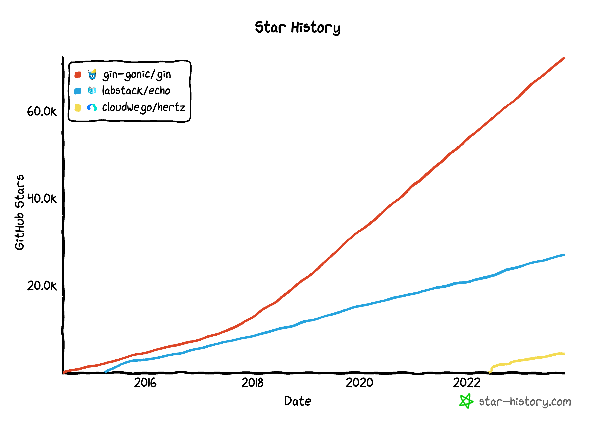
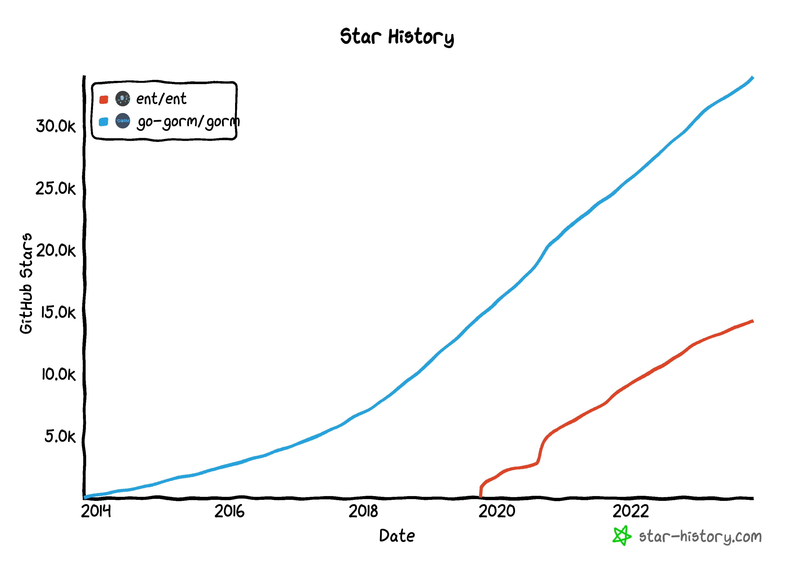
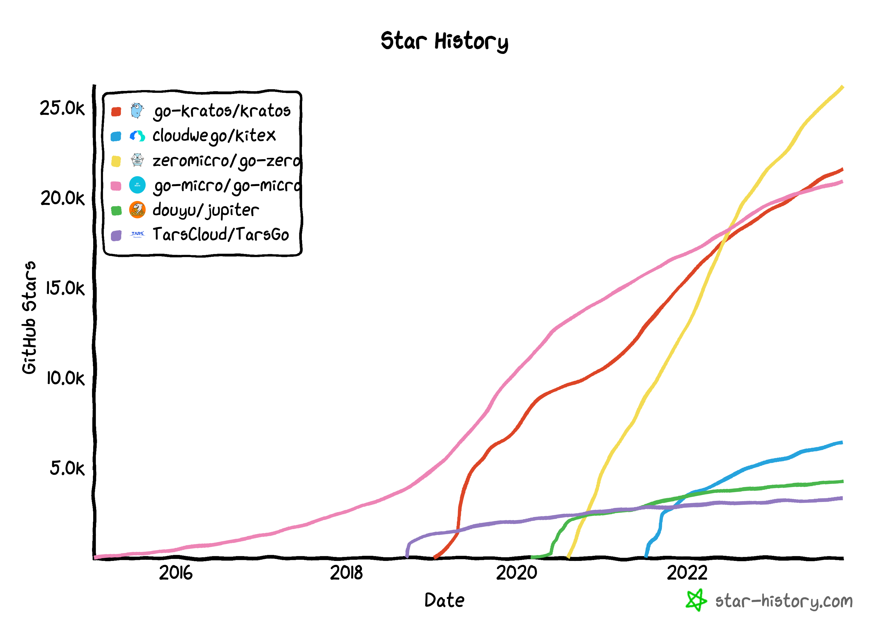

简介 #
https://www.techempower.com/benchmarks/
web框架 #
| gin | doc | github |
| echo | doc | github |
| hertz | doc | github |

数据库框架 #
| ent | doc | github |
| gorm | doc | github |

微服务框架 #
| 来源 | |||
|---|---|---|---|
| go-kratos | doc | github | bilibili |
| kitex | doc | github | 字节跳动 |
| go-zero | doc | github | 晓黑板 |
| TarsGo | github | 腾讯 |
